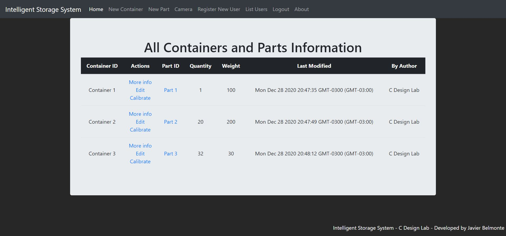
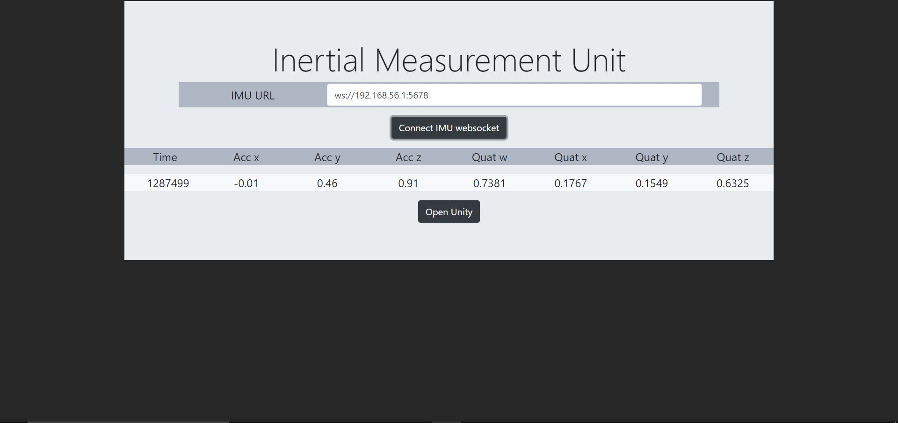
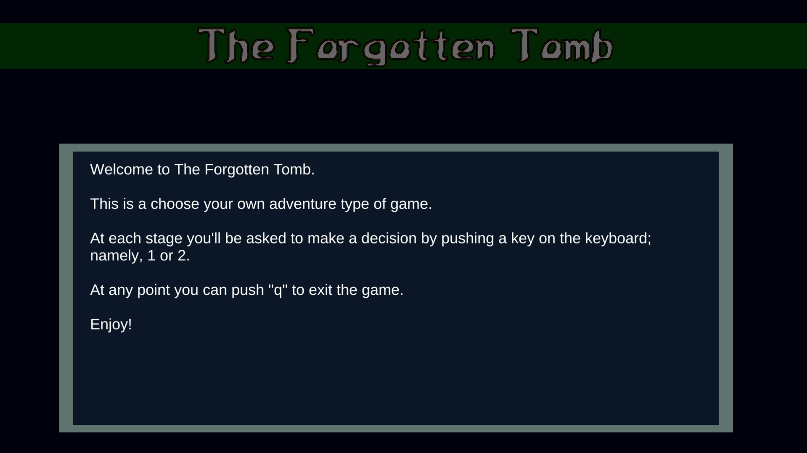
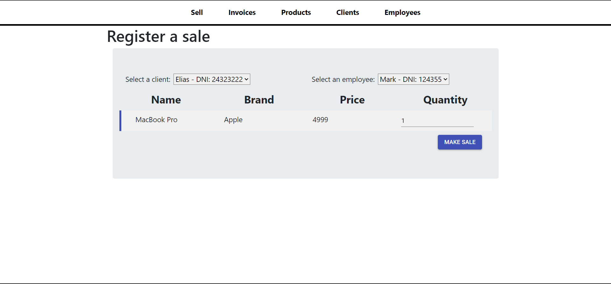

01Explosions
Explosions
in the Sky
A small experiment in emergent behavior. Colored clouds drift, meet, and explode. Click to draw them together and see what happens.
JAVIER BELMONTE / ENGINEER & BUILDER
Hi, I’m Javi. I connect software, mechanics, and imagination—whether I’m working on a real-world system or figuring out what makes a game feel alive.
Explore my work01 / SELECTED WORK
From sensors and stockrooms
to things you can play.
A small experiment in emergent behavior. Colored clouds drift, meet, and explode. Click to draw them together and see what happens.

02 / HARDWARE MEETS SOFTWARE
Inventory that starts in the physical world. Dedicated hardware measures item weight, while a web application keeps track of stock, users, and containers.

03 / SENSING & SIMULATION
An inertial measurement unit, a WebSocket connection, and a 3D view. Sensor measurements become orientation you can see in a browser or Unity.

04 / WORLDBUILDING & PLAY
A small choose-your-own-adventure game inspired by Dungeons & Dragons. An exploration of how a few words and a decision can open up a world.

05 / EVERYDAY SOFTWARE
The practical side of building: managing clients, employees, products, and invoices in one web application.
06 / ONE MORE EXPERIMENT
A color guessing game with three difficulty levels and a high-score table.
02 / THE PERSON BEHIND THE PROJECTS
I’m an engineer with a background in mechatronics, control systems, and software, and a master’s degree from Purdue University. My work has taken me across web applications, IoT, embedded systems, and technical leadership.
I like understanding how the pieces fit together: the algorithm, the hardware, the architecture, and the experience on the other side of it.
That curiosity also pulls me toward C++ game engines, programming languages, and creative tools. Outside engineering, it finds its way into music and Dungeons & Dragons worlds.
03 / THE PROFESSIONAL DETAILS
For the experience and education behind the projects.
LET’S CONNECT